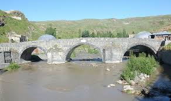

Kars Hakkında
Genel Bilgiler
Kars, Türkiye'nin kuzeydoğusunda yer alan, tarihi ve kültürel zenginlikleriyle öne çıkan bir şehirdir. Yaklaşık 277 bin nüfusa sahiptir Kars, çeşitli etnik gruplarını ve mezhepleri barındıran zengin ve renkli bir kültüre sahiptir. Kars'ın toplumsal yapısı çeşitli etnik gruplarının kültürel gelenekleriyle harmanlanmıştır. Bu özelliğiyle de etkileyici bir kent durumundadır. Çok-kültürlülük sayesinde yörenin zengin bir folkloru ve şive ağız özellikleri bulunmaktadır. 1.768 metre rakımıyla Türkiye'nin en yüksek illerindendir. Türkiye'nin Kafkasya'ya açılan kapısı konumundaki bu şehir, Kafkas Üniversitesinin açılmasıyla hızla gelişmeye başlamış ve zaman içinde bir öğrenci kenti durumuna gelmiştir. Kars'ta karasal iklim hakimdir. Kars yaylalarının Kars yöresine ait olan iklimi, yüksek ve denizden sıradağlarla ayrılmış olduğundan çok serttir. Kışları kurak, yazları ise yağışlı geçer. Ormanların çok yer tutmadığı şehrin doğal bitki örtüsü bozkırdır. Kars coğrafyası, önemli ekolojik sistemlerden sayılan plato ve dağ çayırlarına ev sahipliği yapmaktadır. Burada 1250'ye yakın tohumlu bitki doğal olarak yetişir. Bu bitkilerden 100 adeti dünyada başka hiçbir yerde yetişmeyen nadir bitki türleridir.
Tarihi ve Kültürel Yerler
Ani Harabeleri

UNESCO Dünya Mirası listesinde yer alan Ani, 10. yüzyılda Bagratlı Krallığı'nın başkenti olmuştur. "1001 Kilise Şehri" olarak bilinir.
Kars Kalesi

12. yüzyılda Melik İzzeddin tarafından yaptırılmış, Osmanlı döneminde Lala Mustafa Paşa tarafından yeniden inşa edilmiştir.
12 Havariler Kilisesi

10. yüzyılda inşa edilmiştir. Sonrasında camiye çevrilmiş, günümüzde Kümbet Camii olarak kullanılmaktadır.
Taşköprü
1579’da Lala Mustafa Paşa tarafından Kars Çayı üzerinde inşa edilmiştir. Üç kemerli yapısıyla tanınır.
Doğal Güzellikler
Çıldır Gölü

Kışın tamamen donan gölde atlı kızak gezileri yapılır. Manzarası büyüleyicidir.
Sarıkamış Ormanları

Kış sporları ve doğa yürüyüşleri için ideal bir alandır. Kristal karıyla ünlüdür.
Lezzetler
Kars Kaşarı

Yayla sütünden yapılan bu peynir sert ve aromatik tadıyla bilinir. Türkiye’nin en kaliteli kaşarları arasında yer alır.
Kaz Eti

Kars’a özgü geleneksel bir yemektir. Özellikle kışın tüketilir, fırında uzun sürede pişirilir.